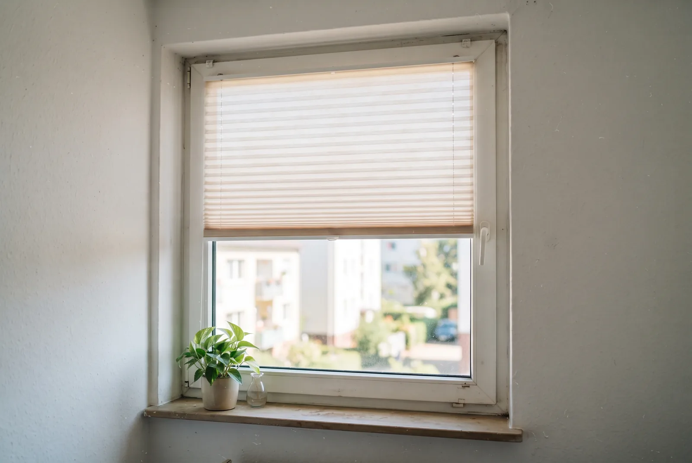
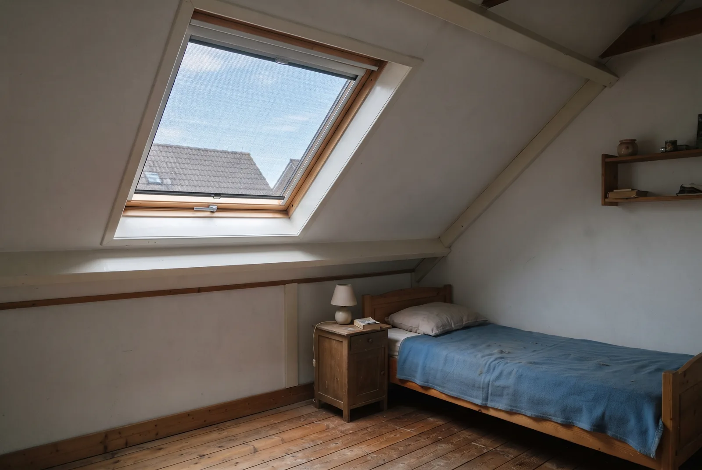

Inhaltsverzeichnis
- Warum sich Räume über die Fenster aufheizen
- Die Optionen im Überblick: innen, außen oder im Glas
- Innenliegender Hitzeschutz: günstig, schnell, ohne Bohren
- Außenliegender Hitzeschutz: die deutlich wirksamere Klasse
- Kosten und Aufwand im Vergleich
- Welche Lösung passt zu Ihrer Situation?
- Förderung für außenliegenden Sonnenschutz
- Fazit
- Häufige Fragen
Das Wichtigste in Kürze
- Kernaussage: Hitze außen abfangen schlägt jede Abschirmung von innen. Ist die Strahlung erst durch die Scheibe, ist die Wärme im Raum – ganz gleich, was davor hängt.
- Die Größenordnung: Ein wirksamer Sonnenschutz sollte laut Umweltbundesamt 80 bis 90 Prozent der Sonneneinstrahlung abhalten. Innenliegende Rollos schaffen 5 bis 45 Prozent.
- Folie ist die Ausnahme: Stark reflektierende Sonnenschutzfolien ließen im Test der Stiftung Warentest nur 13 bis 20 Prozent der Strahlung durch – bezahlt mit dauerhafter Verdunkelung und mehr Heizbedarf im Winter.
- Mieter und Eigentümer trennen: Ohne Bohren geht innen fast alles. Alles an der Fassade braucht die Zustimmung des Eigentümers.
- Der übersehene Hebel: Außenliegender Sonnenschutz mit optimierter Tageslichtversorgung ist über die BEG beim BAFA förderfähig – innenliegender ausdrücklich nicht.
- Alle Förderangaben: Stand 13. Juli 2026, ohne Gewähr – Details in der Hinweisbox am Ende des Beitrags.
Warum sich Räume über die Fenster aufheizen
Eine gedämmte Wand lässt an einem Hitzetag kaum Energie in den Raum. Eine Fensterscheibe dagegen ist genau dafür gebaut, Licht und damit Strahlungsenergie durchzulassen. Wie viel davon ankommt, beschreibt der g-Wert. Die Verbraucherzentrale nennt für übliche Verglasung einen g-Wert von 0,6 bis 0,7: 60 bis 70 Prozent der eingestrahlten Sonnenenergie landen im Raum. Eine Standard-Zweifachverglasung liegt typischerweise bei etwa 0,6 bis 0,7, eine Dreifachverglasung bei rund 0,55. Deutlich niedriger kommt nur Sonnenschutzverglasung: Sie erreicht je nach Aufbau etwa 0,3 bis 0,4 (zweifach) und rund 0,25 (dreifach) – lässt also nur rund ein Viertel bis ein Drittel der Sonnenenergie durch.
Diese Energie trifft auf Boden, Möbel und Wände, wird dort in Wärme umgewandelt und bleibt im Raum. Das ist der Kern des Problems – und der Grund, warum die Reihenfolge in der Frage nach dem besten Hitzeschutz vorentschieden ist: Was die Strahlung abfängt, bevor sie die Scheibe erreicht, wirkt prinzipiell besser als alles, was danach kommt. Ein innenliegendes Rollo kann Strahlung nur zurückreflektieren, und ein Teil davon bleibt trotzdem als Wärme im Zimmer.
Wie stark ein Raum sich aufheizt, hängt zusätzlich an Ausrichtung und Fenstergröße. Südfenster bekommen mittags die höchste Einstrahlung ab, Ost- und Westfenster die flachste und damit über die gesamte Fensterfläche wirksamste. Der Härtefall ist das Dachflächenfenster: Es steht fast im rechten Winkel zur Mittagssonne und hat oft keinen Dachüberstand über sich. Die Stiftung Warentest hat für einen Dachgeschossraum mit vier Quadratmetern Schrägfenster im Hochsommer Spitzenwerte von bis zu 56 Grad Celsius errechnet – ein Extremwert, der zeigt, welche Energiemengen hier im Spiel sind.
Die Optionen im Überblick: innen, außen oder im Glas
Sortiert man alle Produkte, die unter dem Stichwort Hitzeschutz verkauft werden, bleiben drei Gruppen übrig – und die Gruppe entscheidet über die Wirkung mehr als das einzelne Produkt.
Innenliegend sind Sonnenschutzfolie, Plissee und Wabenplissee, Thermorollo, Jalousie und Vorhang. Sie sitzen hinter der Scheibe, sind in Minuten montiert, brauchen in der Regel kein Werkzeug und kosten wenig. Ihre Grenze ist physikalischer Natur.
Außenliegend sind Rollladen, Fensterladen, Raffstore, Markise und Textilscreen. Sie hängen vor dem Glas, fangen die Strahlung ab, bevor sie in die thermische Hülle gelangt, und geben die entstehende Wärme an die Außenluft ab. Sie kosten mehr, brauchen meist eine Fachmontage – und wirken deutlich besser.
Im Glas arbeiten Sonnenschutzverglasung mit niedrigem g-Wert und Beschattungssysteme im Scheibenzwischenraum. Sie sind wartungsarm und von außen unauffällig, aber praktisch nur beim Fenstertausch sinnvoll.
Die Faustregel dazu liefert das Umweltbundesamt: Die Wirkung eines Sonnenschutzes beschreibt der Abminderungsfaktor FC nach DIN 4108-2. Er sollte bei höchstens 0,2 bis 0,1 liegen — der Sonnenschutz muss also 80 bis 90 Prozent der Sonneneinstrahlung abhalten. Innenliegende Rollos halten nach derselben Quelle 5 bis 45 Prozent ab. Zwischen den beiden Gruppen liegt kein Nuancenunterschied, sondern eine Größenordnung.
Innenliegender Hitzeschutz: günstig, schnell, ohne Bohren
Für Mieter ist das die Klasse, die sofort umsetzbar ist – und sie ist besser als ihr Ruf, solange man weiß, was sie leisten kann.
Die Sonnenschutzfolie ist der Sonderfall unter den Innenlösungen, weil sie nicht abschirmt, sondern reflektiert. Im Test der Stiftung Warentest ließen stark reflektierende Folien nur 13 bis 20 Prozent der Sonnenstrahlen in den Raum; die weniger stark reflektierenden Varianten hielten immer noch 55 bis 60 Prozent der Sonnenenergie ab. In der Modellrechnung sanken die Hitzestunden über 26 Grad um bis zu 76 Prozent. Das ist beachtlich – hat aber einen Preis. Die Folie klebt das ganze Jahr auf der Scheibe: Sie verdunkelt den Raum spürbar, sodass an trüben Tagen früher Licht angeschaltet wird, und sie mindert im Winter die solaren Gewinne, was den Heizbedarf erhöht. Auf Isolierverglasung ist zusätzlich Vorsicht geboten, weil die veränderte Wärmeaufnahme der Scheibe Spannungen erzeugen kann; klären Sie das vorab mit dem Fensterhersteller, sonst riskieren Sie die Garantie. Und einmal falsch geklebt oder geknickt, ist die Folie unbrauchbar.
Plissee, Wabenplissee und Thermorollo sind die flexible Alternative: Klemmträger am Flügel, Saugnäpfe oder Klebehalterungen kommen ohne Bohren aus, und anders als die Folie lassen sie sich im Winter komplett öffnen. Entscheidend ist die zur Scheibe zeigende Seite – je heller und reflektierender die Rückseite, desto mehr Strahlung geht wieder nach draußen. Ein dunkles Rollo dagegen wird selbst warm und heizt den Raum von innen.
Jalousie und Vorhang gehören ehrlicherweise in die Kategorie Blendschutz. Sie machen den Raum angenehmer, aber ihr Beitrag zur Temperatur ist gering.
Die physikalische Grenze bleibt bei allen: Die Energie ist bereits im Raum. Innenliegender Hitzeschutz ist die richtige Wahl, wenn außen nichts geht – aber er ist nicht die bessere Lösung, sondern die verfügbare.
Unser Tipp: Was in der Mietwohnung erlaubt ist und wofür Sie die Zustimmung des Vermieters brauchen.
Außenliegender Hitzeschutz: die deutlich wirksamere Klasse
Hier entscheidet sich, ob ein Raum im Hochsommer bewohnbar bleibt. Die Verbraucherzentrale empfiehlt als ideale Lösung außenliegende Raffstores oder Rollläden – und der Grund ist immer derselbe: Die Wärme entsteht außerhalb der Gebäudehülle und wird vom Wind abgeführt.
Der Rollladen ist der wirksamste Hitzeschutz überhaupt, weil er das Fenster vollständig abdeckt. Er bringt Einbruchhemmung mit und verbessert im Winter den Wärmeschutz des Fensters. Sein ehrlicher Nachteil: Bei geschlossenem Panzer ist der Raum dunkel. Wer tagsüber im Zimmer arbeitet, sitzt bei Kunstlicht.
Der Raffstore löst genau dieses Problem. Seine Lamellen lassen sich kippen: Die direkte Sonne wird abgefangen, diffuses Tageslicht kommt weiter herein, und der Blick nach draußen bleibt. Das ist die komfortabelste Lösung – und die teuerste in der Anschaffung.
Markise und Textilscreen sind die typischen Nachrüstlösungen: an der Fassade, über der Terrasse oder als Hitzeschutzmarkise direkt auf dem Dachflächenfenster. Ihr Nachteil ist der Wind. Ein ausgefahrenes Tuch ist eine Angriffsfläche, und wer bei aufziehendem Sturm nicht zu Hause ist, riskiert einen Schaden – weshalb ein Windsensor hier keine Spielerei ist, sondern eine Versicherung.
Damit sind wir bei dem Punkt, den die meisten Ratgeber unterschlagen: Eine automatische, strahlungs- und tageslichtabhängige Steuerung ist kein Zubehör. Ein Sonnenschutz, der erst geschlossen wird, wenn jemand nach Feierabend nach Hause kommt und den Raum warm vorfindet, hat den entscheidenden Teil seiner Wirkung verschenkt. Die Beschattung muss fahren, bevor die Sonne auf das Glas trifft – und das kann nur ein Sensor zuverlässig leisten. Genau deshalb spielt die Steuerung auch bei der Förderung eine zentrale Rolle.

Welcher Sonnenschutz ist an Ihrem Haus förderfähig?
Wir prüfen Ihr Angebot auf Förderfähigkeit, bevor Sie unterschreiben – und begleiten Antrag und Nachweise bis zur Auszahlung.
Kostenlose ErsteinschätzungKosten und Aufwand im Vergleich
Die Preisspannen im Sonnenschutz sind enorm, weil fast alles Maßanfertigung ist: Fenstergröße, Montagesituation, Motorisierung und Steuerung verschieben den Preis erheblich. Belastbar beziffern lässt sich nur die Folie – die Stiftung Warentest nennt für die Selbstmontage etwa 17 bis 63 Euro pro Quadratmeter. Für alle anderen Systeme geben wir bewusst nur Größenordnungen an; ein seriöser Preis ergibt sich erst aus dem Aufmaß vor Ort.
| Lösung | Wirkung gegen Hitze | Kosten (Größenordnung) | Mietertauglich | Förderfähig (BEG) |
|---|---|---|---|---|
| Sonnenschutzfolie | Hoch, aber statisch – wirkt auch im Winter | Niedrig (ca. 17–63 €/m² in Selbstmontage) | Ja, ohne Bohren | Nein |
| Plissee / Wabenplissee | Gering bis mittel, je nach Rückseite | Niedrig, pro Fenster | Ja, Klemm- oder Saugsystem | Nein |
| Thermorollo | Gering bis mittel | Niedrig, pro Fenster | Ja, ohne Bohren | Nein |
| Innenjalousie / Vorhang | Gering – vor allem Blendschutz | Sehr niedrig | Ja | Nein |
| Rollladen (außen) | Sehr hoch – vollständige Abschattung | Hoch, Fachmontage | Nur mit Zustimmung des Eigentümers | Ja, bei optimierter Tageslichtversorgung |
| Raffstore (außen) | Sehr hoch – mit Tageslicht und Ausblick | Sehr hoch, Fachmontage | Nur mit Zustimmung des Eigentümers | Ja, bei optimierter Tageslichtversorgung |
| Markise / Textilscreen | Hoch, aber windanfällig | Mittel bis hoch | Nur mit Zustimmung des Eigentümers | Ja, wenn parallel zum Fenster verlaufend |
| Sonnenschutzglas / Beschattung im Scheibenzwischenraum | Hoch, dauerhaft, wartungsarm | Sehr hoch – sinnvoll nur beim Fenstertausch | Nein | Im Rahmen der Einzelmaßnahme Fenster |
Die Folgekosten fallen dabei gern unter den Tisch. Motoren, Sensoren und Steuerungen wollen gewartet, Lamellen und Tücher gereinigt werden. Umgekehrt gilt: Ein Rollladen oder Raffstore hält Jahrzehnte und arbeitet im Winter weiter, während ein 30-Euro-Rollo eine Saisonlösung bleibt. Die günstige Variante rächt sich immer dann, wenn sie das eigentliche Problem nur kaschiert – etwa im Dachgeschoss, wo kein Innenrollo gegen 50 Grad unter der Schräge ankommt.
Unser Tipp: Was ein mobiles Klimagerät im Betrieb wirklich kostet – und warum Beschattung die günstigere Rechnung ist.
Welche Lösung passt zu Ihrer Situation?
Als Mieter starten Sie innen. Wabenplissee oder Thermorollo mit heller Rückseite sind in einer halben Stunde montiert und lassen sich im Winter wieder öffnen. Für dauerbesonnte Fenster, an denen Sie ohnehin nie den vollen Lichteinfall brauchen – Dachfenster, Treppenhaus, ein Südfenster im Schlafzimmer – kann die Folie die wirksamere Wahl sein. Alles, was an die Fassade kommt, verändert das äußere Erscheinungsbild des Gebäudes und braucht die Zustimmung des Vermieters. Das ist kein Ausschlusskriterium: Ein Vermieter, der die Fassade ohnehin instand setzen lässt, hat ein eigenes Interesse an Beschattung. Fragen kostet nichts.
Als Eigentümer ist die Antwort in den meisten Fällen außenliegende Beschattung mit automatischer Steuerung. Vorbau-Rollläden und Aufsatzsysteme lassen sich in vielen Bestandsgebäuden nachrüsten, ohne die Fassadendämmung zu öffnen. Der ideale Zeitpunkt ist ein ohnehin anstehender Fenstertausch oder eine Fassadensanierung – wenn das Gerüst steht, ist die Nachrüstung ein Bruchteil dessen, was sie als eigenständiges Vorhaben kostet.
Im Dachgeschoss gilt eine eigene Rangfolge. Die Aufheizung ist hier am stärksten, und eine außenliegende Hitzeschutzmarkise oder ein Dachfensterrollladen ist die mit Abstand größte Einzelmaßnahme. Wo das nicht geht, ist die stark reflektierende Folie eine ernsthafte zweite Wahl – die Spiegelung, die an Fassadenfenstern die Nachbarn stört, fällt auf dem Schrägfenster nicht auf.
Und in jedem Fall gilt: Beschattung allein reicht nicht. Sie wirkt erst zusammen mit nächtlichem Querlüften, mit abgeschalteten Wärmequellen und mit der Disziplin, tagsüber geschlossen zu halten, was geschlossen bleiben soll. Die Kombination schlägt jede Einzelmaßnahme.
Förderung für außenliegenden Sonnenschutz
Kaum jemand rechnet damit, deshalb sei es deutlich gesagt: Der Bund beteiligt sich an außenliegendem Sonnenschutz. In der Bundesförderung für effiziente Gebäude gibt es die Einzelmaßnahme „Sommerlicher Wärmeschutz“, zuständig ist das BAFA. Gefördert wird der Ersatz oder der erstmalige Einbau von außenliegenden Sonnenschutzeinrichtungen mit optimierter Tageslichtversorgung – etwa über Lichtlenksysteme oder eine strahlungsabhängige Steuerung.
Was genau darunterfällt, ist im Infoblatt des BAFA eng definiert. Förderfähig sind ausschließlich außenliegende Sonnenschutzvorrichtungen nach DIN 4108-2, Tabelle 7, Zeile 3.1 bis 3.3, und zwar unabhängig von der Art des Antriebs:
- Fensterläden und Rollläden
- Jalousien und Raffstores
- Markisen, die parallel zu Fenstern in der thermischen Gebäudehülle verlaufen
Ausdrücklich nicht förderfähig sind alle innenliegenden Vorrichtungen – innenliegende Rollos, Jalousien, drehbare Lamellen, Raffstores und Plissees. Beschattung im Scheibenzwischenraum ist förderfähig, aber im Zusammenhang mit der Einzelmaßnahme Fenster, nicht als eigener Fördertatbestand.
Zu den Konditionen: Das BAFA nennt für Einzelmaßnahmen an der Gebäudehülle einen Grundfördersatz von 15 Prozent der förderfähigen Ausgaben und – bei Vorliegen eines geförderten individuellen Sanierungsfahrplans (iSFP) – einen zusätzlichen Bonus von 5 Prozent. Für diesen Bonus gilt für Anträge ab dem 21. Juli 2026 eine neue Bedingung: Er wird erst ab einem förderfähigen Mindestinvestitionsvolumen von 30.000 Euro gewährt – und nur auf den Betrag, der darüber hinausgeht. Für eine reine Sonnenschutz-Maßnahme läuft er damit in der Regel ins Leere; relevant wird er erst, wenn Sie den Sonnenschutz mit weiteren Maßnahmen an der Gebäudehülle bündeln. Auch die Höchstgrenzen der förderfähigen Ausgaben je Wohneinheit werden mit der Reform zum 21. Juli 2026 angepasst. Welche Sätze und Grenzen für Ihr Vorhaben konkret gelten, hängt deshalb am Antragsdatum – das prüfen wir individuell und tagesaktuell für Sie, statt hier eine Zahl zu nennen, die morgen anders lautet.
Und die Reihenfolge, an der die meisten Förderungen scheitern: Erst holen Sie ein Angebot ein. Dann lassen Sie es vor der Unterschrift auf Förderfähigkeit prüfen – Positionen, technische Anforderungen, Steuerung. Dann unterschreiben Sie den Liefer- und Leistungsvertrag mit aufschiebender Bedingung, also unter dem Vorbehalt der Förderzusage. Erst danach erstellt der Energieeffizienz-Experte die technische Projektbeschreibung, mit der der Antrag beim BAFA gestellt wird. Nach der Zusage wird umgesetzt. Wer mit dem Vorhaben beginnt, bevor der Antrag gestellt ist, verliert die Förderung. Ohne Energieeffizienz-Experten geht bei Maßnahmen an der Gebäudehülle ohnehin nichts – er ist bei der Antragstellung vorgeschrieben. Genau hier setzen wir an: Wir prüfen Ihr Angebot vor der Vertragsunterschrift, erstellen die Nachweise und begleiten den Antrag bis zur Auszahlung.

Fazit
Der Vergleich endet dort, wo er begonnen hat: bei der Physik. Wer die Sonne vor der Scheibe abfängt, hält 80 bis 90 Prozent der Einstrahlung draußen. Wer sie dahinter abschirmt, bewegt sich – die Folie als Sonderfall ausgenommen – in einer ganz anderen Größenordnung.
Als Mieter fahren Sie mit einem Wabenplissee oder Thermorollo ohne Bohren gut, und an dauerbesonnten Fenstern ist die Sonnenschutzfolie eine ernsthafte Option – solange Sie die Verdunkelung und den höheren Heizbedarf im Winter bewusst in Kauf nehmen. Als Eigentümer führt der Weg zu außenliegender Beschattung mit automatischer Steuerung: Rollladen, wenn Verdunkelung kein Problem ist, Raffstore, wenn Sie Tageslicht und Ausblick behalten wollen.
Dass genau diese wirksamere Lösung gefördert wird, verschiebt die Rechnung noch einmal – und wird in kaum einem Ratgeber erwähnt, weil dort meist Folien und Rollos verkauft werden sollen. Der sinnvolle nächste Schritt ist deshalb nicht die Bestellung, sondern die Frage, was an Ihrem Gebäude technisch passt und was davon förderfähig ist. Genau das sehen wir uns mit Ihnen an – bevor Sie ein Angebot unterschreiben, nicht danach.
Häufige Fragen
Was hält am besten die Hitze vom Fenster ab?
Außenliegender Sonnenschutz. Rollläden, Raffstores, Fensterläden und Markisen fangen die Strahlung ab, bevor sie das Glas passiert. Laut Umweltbundesamt sollte ein wirksamer Sonnenschutz 80 bis 90 Prozent der Sonneneinstrahlung abhalten – das erreichen außenliegende Systeme. Innenliegende Rollos halten dagegen nur 5 bis 45 Prozent ab, weil die Wärme zu diesem Zeitpunkt bereits im Raum ist. Wenn eine Außenmontage möglich ist, ist sie fast immer die richtige Wahl.
Wie gut sind Hitzeschutzfolien für Fenster?
Deutlich besser als ihr Ruf, aber mit klaren Schattenseiten. Im Test der Stiftung Warentest ließen stark reflektierende Sonnenschutzfolien nur 13 bis 20 Prozent der Sonnenstrahlen in den Raum, weniger stark reflektierende hielten immer noch 55 bis 60 Prozent der Sonnenenergie ab. Die Hitzestunden über 26 Grad ließen sich in der Modellrechnung um bis zu 76 Prozent senken. Der Preis dafür: Die Folie bleibt das ganze Jahr auf der Scheibe, verdunkelt den Raum und erhöht im Winter den Heizbedarf.
Wie kann ich Fenster auf der Südseite vor Hitze schützen?
Südfenster stehen mittags im steilsten Sonnenstand. Hier wirken Systeme mit horizontaler Abschattung besonders gut: Markisen, Raffstores mit gekippten Lamellen oder auch ein Vordach halten die hochstehende Sonne ab, ohne den Raum vollständig zu verdunkeln. Ost- und Westfenster sind der schwierigere Fall, weil die Sonne dort flach einstrahlt – dort brauchen Sie eine Beschattung, die die gesamte Fensterfläche abdeckt. Entscheidend ist in allen Fällen, dass die Beschattung geschlossen wird, bevor die Sonne auf die Scheibe trifft.
Welcher Hitzeschutz funktioniert in der Mietwohnung ohne Bohren?
Innenliegende Systeme mit Klemmträgern am Fensterflügel, Saugnäpfen oder Klebehalterungen: Wabenplissees, Thermorollos und Klemmrollos lassen sich ohne Eingriff in die Bausubstanz montieren. Sonnenschutzfolien kommen ganz ohne Halterung aus. Alles, was an der Fassade befestigt wird – Rollladen, Raffstore, Markise – verändert das äußere Erscheinungsbild des Gebäudes und braucht die Zustimmung des Eigentümers. Es gibt außenliegende Klemm-Rollos, die ohne Bohren am Fensterrahmen halten; auch die sollten Sie vorher mit dem Vermieter abstimmen.
Wird Hitzeschutz an Fenstern gefördert?
Ja, aber nur außenliegender. Der Bund fördert über die Bundesförderung für effiziente Gebäude beim BAFA den Ersatz oder erstmaligen Einbau von außenliegenden Sonnenschutzeinrichtungen mit optimierter Tageslichtversorgung, etwa über Lichtlenksysteme oder eine strahlungsabhängige Steuerung. Förderfähig sind Fensterläden und Rollläden, Jalousien und Raffstores sowie Markisen, die parallel zum Fenster verlaufen. Innenliegende Rollos, Plissees und Jalousien sind ausdrücklich nicht förderfähig. Die Antragstellung setzt einen Energieeffizienz-Experten voraus.
Stand der Angaben (13. Juli 2026): Die genannten Förderkonditionen geben den zum Redaktionsschluss veröffentlichten Stand von BAFA und BMWE wieder. Mit der Reform der Bundesförderung für effiziente Gebäude zum 21. Juli 2026 werden Höchstgrenzen und Bonusbedingungen angepasst; die geänderte Förderrichtlinie ist noch nicht vollständig veröffentlicht. Alle Angaben erfolgen ohne Gewähr. Die Förderung steht unter dem Vorbehalt verfügbarer Bundesmittel, ein Rechtsanspruch besteht nicht. Welche Konditionen für Ihr Vorhaben konkret gelten, prüfen wir gern tagesaktuell für Sie.